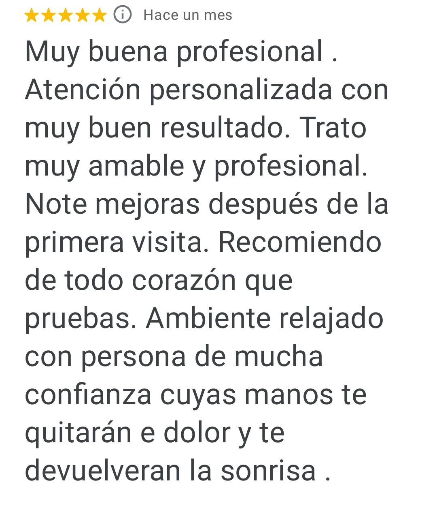
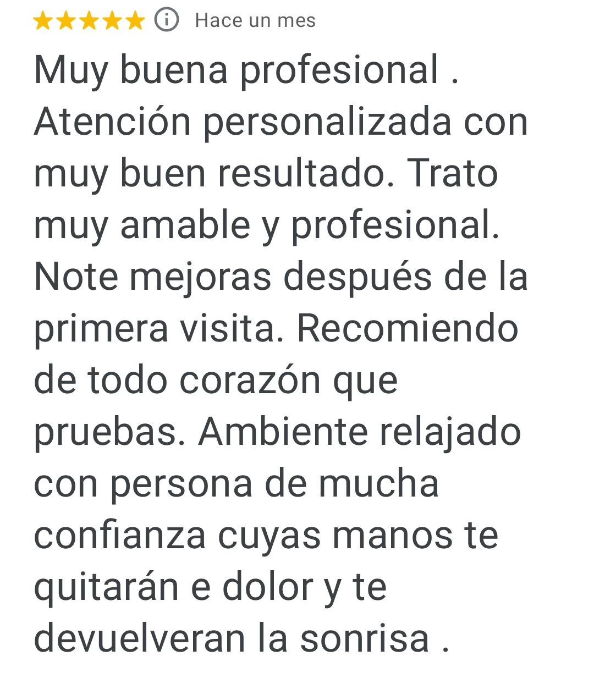

Виды массажа
Relaja profundamente, mejora la circulación y reduce tensiones acumuladas. Ideal para el cuidado regular del cuerpo o tras esfuerzo físico.
Contraindicaciones: fiebre, problemas cutáneos, varices inflamadas.
Tratamiento enfocado en la zona con dolor o rigidez (espalda, cuello, hombros, etc.). Libera tensiones, mejora el movimiento y reduce molestias.
Contraindicaciones: inflamaciones agudas, traumatismos recientes, trombosis.
Técnica suave que activa el sistema linfático, reduce edemas y sensación de pesadez. Mejora la recuperación y el bienestar general.
Contraindicaciones: infecciones, trombosis, procesos oncológicos activos.
Esta suave terapia manual ayuda al cuerpo a "recordar" cómo mantener el equilibrio. Alivia el dolor de espalda, cabeza y abdomen, y promueve la recuperación del estrés y las lesiones. No solo trata los síntomas, sino también el origen y las causas de los problemas. Contraindicaciones: inflamación aguda, lesiones, fiebre alta y cáncer activo.
Contraindicaciones: inflamación aguda, lesiones, fiebre alta y cáncer activo.
Estimula el drenaje, tonifica la piel y ayuda a reducir zonas de retención o flacidez. Trabajo profundo pero respetuoso.
Contraindicaciones: embarazo, varices, cáncer.
Revitaliza la piel, mejora la circulación y libera tensiones en músculos faciales. Aporta frescura y descanso al cara.
Contraindicaciones: acné inflamatorio, herpes activo, cuperosis.
Estimulo puntos reflejos en los pies que están conectados con los órganos del cuerpo. Aporta equilibrio, calma y mejora del sueño.
Contraindicaciones: infecciones en los pies, fiebre.
El masaje visceral es un trabajo profundo y suave de los órganos internos a través de los músculos y la fascia del abdomen. Ayuda a:
• Mejorar la circulación sanguínea y el flujo linfático
• Recuperar la movilidad de los órganos internos
• Reducir las adherencias, procesos estancados y tensión
• Apoyar el trabajo del tracto gastrointestinal, hígado, riñón y otros sistemas
• Reducir los niveles de estrés y malestar interno
• Eficaz en la rehabilitación después de las operaciones y el estudio de las suturas postoperatorias, especialmente cuando hay un proceso de adhesión y restricción de la movilidad de los tejidos
Los órganos, como los músculos, necesitan libertad de movimiento. Cuando se "pellizcan", afecta a todo el cuerpo. Y el enfoque visceral es el camino hacia la armonía desde adentro.
Ayuda a que la cicatriz deje de generar tirantez o bloqueos en los tejidos. Mejora la movilidad y la sensación en la zona.
Contraindicaciones: cicatriz no cicatrizada, dolor o inflamación.
Técnica osteopática muy suave para recuperar la movilidad de los huesos del cráneo tras operaciones, golpes o partos difíciles.
Contraindicaciones: traumatismo craneal reciente, presión intracraneal elevada.
Mejora la circulación, elimina estancamientos y alivia el dolor o inflamación. Se aplica tanto en rostro como en cuerpo.
Contraindicaciones: piel sensible, varices, hematomas recientes.
Relaja la musculatura del cráneo, alivia la tensión mental y mejora la oxigenación del cerebro. Especialmente útil para cefaleas frecuentes.
Contraindicaciones: crisis hipertensiva, infecciones agudas.
Las cintas terapéuticas sostienen músculos y articulaciones, reducen dolor e inflamación. Apoyo perfecto para lesiones o edemas.
Contraindicaciones: alergia al adhesivo, lesiones cutáneas.
Masaje profundo desde fuera y dentro de la boca (con guantes). Mejora el contorno facial, reduce la tensión mandibular y ayuda en bruxismo.
Contraindicaciones: infecciones bucales, herpes, dolor dental.
Liberar la respiración es liberar el cuerpo. Esta técnica mejora el estado emocional, digestivo y la conexión cuerpo-mente.
Contraindicaciones: crisis asmática, infecciones respiratorias.
Uso herramientas específicas para liberar adherencias en fascias y tejidos profundos. Rápido alivio del dolor y recuperación de movilidad.
Contraindicaciones: trombosis, lesiones recientes, cáncer.
Sobre mí

Me llamo Mila y soy profesional con más de 15 años de experiencia en el ámbito de la salud y el bienestar
Desde hace más de 6 años me dedico al masaje y a técnicas corporales y osteopáticas, ayudando a las personas a recuperar el equilibrio, liberar tensiones y volver a sentirse bien en su cuerpo.
Trabajo desde un enfoque totalmente personalizado. No existen soluciones estándar: existes tú, tu historia y tu cuerpo, que siempre comunica. Mi labor es escucharlo y encontrar la mejor manera de acompañarte.
He completado más de 35 formaciones, incluyendo masaje clásico y profundo, osteopatía, kinesiología aplicada, psicosomática, nutrición y prácticas corporales orientadas al bienestar integral. Sigo formándome constantemente y participando en cursos, seminarios y encuentros profesionales.
Cada sesión es más que un tratamiento: es un espacio de atención, cuidado y acompañamiento hacia tu bienestar físico, mental y emocional.
Un lugar tranquilo, seguro y cercano, donde podrás reconectar contigo y con tu cuerpo.
Cómo va la primera sesión:
- Conocimiento y escucha atenta.
Usted dice lo que le preocupa, Cuáles son los deseos y los objetivos. Estoy escuchando atentamente para descubrir cómo ayudarle a usted.
- Inspección y encuesta corta.
Realizo una inspección Visual y hago preguntas importantes sobre su salud para descartar contraindicaciones y elegir el mejor enfoque.
- Le explico cómo será la sesión.
Le cuento qué técnicas usaré y por qué. Todo es transparente y claro: está al tanto de cada etapa.
- Sesión.
Trabajo suave y profundamente, con respeto al cuerpo. Opcionalmente, durante o después de la sesión, comparto observaciones sobre las tensiones y las características de su condición.
- Recomendaciones después de la sesión.
Recibirá consejos sobre cómo mantener y mejorar el efecto, desde hábitos simples hasta apoyo entre sesiones.
- Plan para el futuro.
Debatimos cuánto y con qué frecuencia cuesta venir para lograr un resultado sostenible. Si lo desea, planificamos inmediatamente la próxima sesión.

 
